Understand the workload
Tell us what runs over the connection and what happens if it is unavailable.
DEDICATED BUSINESS INTERNET
If your team depends on video meetings, cloud software and daily uploads, it is worth looking beyond an ordinary shared connection. An internet leased line is planned around your business address, working needs and agreed service terms.
Ask about internet lease line ↗WHERE IT HELPS
HOW IT WORKS
A simple view of a typical setup.
The exact design is agreed for your service.

LET’S WORK IT OUT
Tell us what runs over the connection and what happens if it is unavailable.
We check the route and discuss bandwidth, handover, IP requirements and support options.
Review the commercial proposal, any SLA and the installation plan before committing.
BEFORE WE TALK
You don’t need a technical brief. Start with what you know; we can talk through the rest.
QUESTIONS WE CAN HELP WITH
No. It is a business connectivity service with a dedicated circuit and separately agreed terms. The right choice depends on how critical the connection is to your work.
Do not assume that it does. Route diversity, ring architecture, backup links and SLA commitments must be confirmed for your address in the written proposal.
HAS NETWORKS · SHERGARH, MATHURA
Share your location and what you’re trying to do. We’ll discuss availability, scope and a suitable next step.